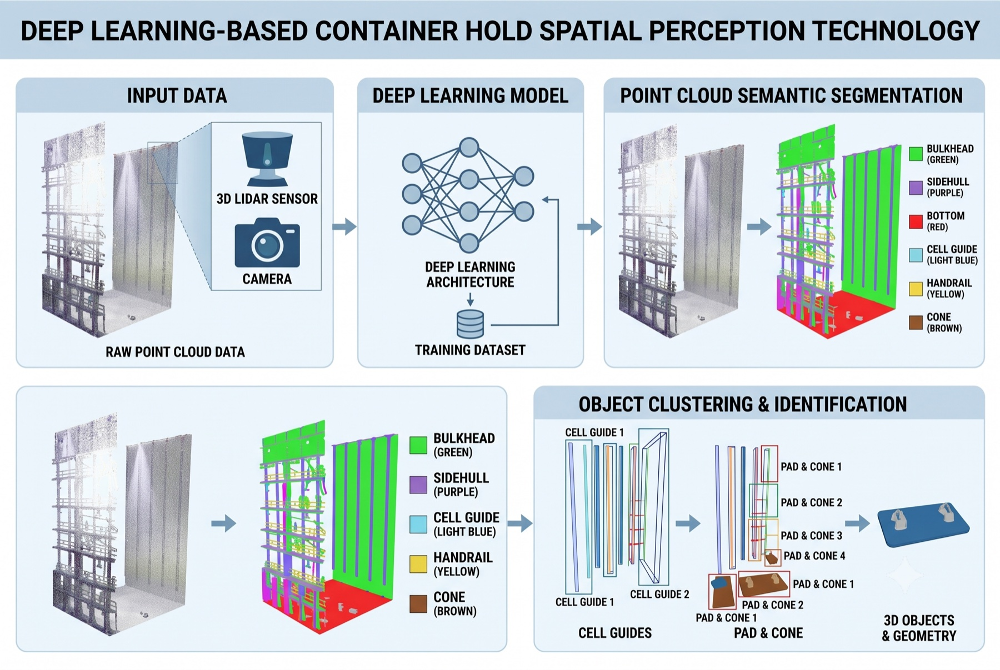

3D Capture & Reconstruction
We connect field-optimized scanning to registration, reference coordinates, reverse engineering, and fabrication support data.
- Multi-scale 3D scanning
- Scan-to-CAD and reverse engineering
- 3D printed jigs and prototypes
Connect 3D scan data to field decisions and execution
We are an industrial 3D point-cloud data company connecting shipbuilding, offshore, manufacturing, and construction spaces to AI analysis, quality decisions, reverse engineering, and robotics.
Scan to Execution
Explore field capture, spatial AI, quality inspection, and Physical AI as one connected data flow.

ACTIVE DATA FLOW
Ship blocks, cargo holds, molds, piping, and workspaces are organized with point clouds, photos, and CAD references.
Point cloud / Photo / CAD referenceThree Solution Pillars
Instead of selling equipment, we scope each project around available inputs, decision criteria, and required deliverables.
We connect field-optimized scanning to registration, reference coordinates, reverse engineering, and fabrication support data.
We read objects and spatial relationships from point clouds, then organize deviation, tolerance, and inspection priorities for decisions.
Real workspaces and sensor conditions are converted into robot-path, collision, weld-line, and execution-coordinate data.
Applied Cases
Examples of shipbuilding and manufacturing scan data connected to inspection, recognition, and automation data.
Structures and workspaces are recognized from a shipyard cargo-hold point cloud, with object segmentation, spatial relationships, and inspection-reference data organized into an automation module.

Deep-learning point-cloud processing and post-processing were studied to detect and segment scaffolding systems during cargo-hold flatness measurement.

Point clouds captured from 16 LiDAR scan stations beneath a ship block at an operating shipyard were semantically segmented, then processed to extract individual support centers and heights and quantify installation deviations against a reference layout.

Topologically significant structures and local geometric features were extracted from large-scale ship-block and shipyard point clouds to reduce data volume while preserving the shape information and performance required for deep-learning object detection.

Scan data from small craft and production molds were compared against reference shapes to verify dimensional control and process-improvement potential.

Ship-block point-cloud environments, 3D vision sensors, and 3D-printed specimens are connected to assess robot paths, collision, accessibility, and weld-line extraction.

Operating Model
We move beyond viewing scan results by adding AI intelligence and extending the data into inspection, reverse engineering, quality decisions, and Physical AI execution.
Review point clouds, CAD, photos, inspection criteria, and field constraints.
Define coordinates, reference geometry, tolerances, and decision criteria.
Validate deviation maps, feature extraction, segmentation, spatial reasoning, and reports.
Deliver inspection reports, CAD reconstruction, jig design, and Physical AI execution data.
Research Backbone by OPTLab
Optimize3D builds on joint shipyard and manufacturing research by OPTLab at Mokpo National Maritime University, covering 3D scanning, quality control, reverse engineering, machine learning, additive manufacturing, and collaborative robotics.
Contact
A point cloud, CAD file, photo set, inspection criterion, or field problem is enough to start defining an application scope.